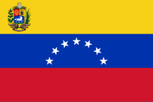

Manuel Alejandro Pumar Carrasquero
About Me
My name is Manuel Pumar, I'm 24 years old, I was born in Venezuela, and I'm currently studying Programming at BYU. I own a small photocopying and t-shirt sublimation business. I really enjoy sports; I watch a lot of soccer, baseball, and basketball. Listening to music is another thing I love.
Maracaibo, Venezuela

Maracaibo is a Venezuelan city, the capital of Zulia State, located in northwestern Venezuela. Historically considered the first city in Venezuela due to its dynamism and economic development, it was also the first city in the country to pioneer the use of various public services such as electricity, and it is situated on the shores of Lake Maracaibo, the site from which the country's name originated.